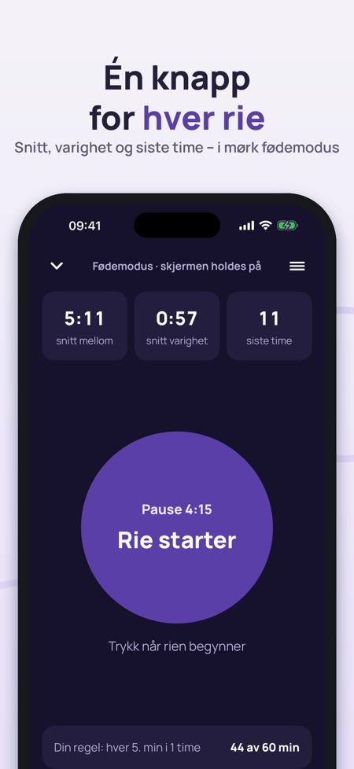
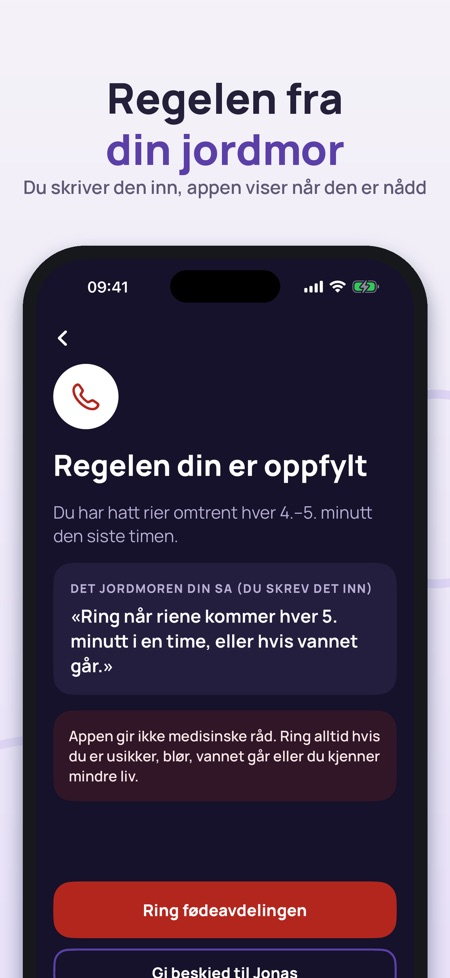
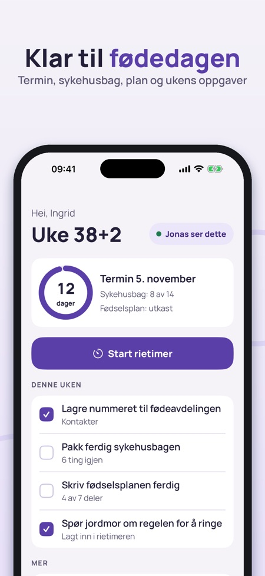

Fødselsklar samler det du trenger på fødedagen: en rietimer med én stor knapp, sykehusbagen, fødselsplanen og numrene du skal ringe. Partneren din kan se det samme via iCloud.



Du trykker på én stor knapp når rien starter og når den er over. Appen viser snitt mellom riene, snitt varighet og antall rier den siste timen.
Ja, den fortsetter riktig når telefonen er låst, appen lukkes eller skjermen slukker. Låseskjermen og Dynamic Island viser rien eller pausen.
Nei. Du skriver inn regelen du har fått fra jordmor eller fødeavdelingen, og appen viser når tallene dine er nådd. Den foreslår ingen tall selv og gir ikke medisinske råd.
Sju deler, blant annet smertelindring, hvem som er med, stillinger, mating og stemning. Du kan lage en PDF på norsk som du kan skrive ut eller vise fram.
Du deler via iCloud, uten konto. Partneren ser status for riene, sykehusbagen, planen og kontaktene, og du velger selv hva som deles.
Rietimeren, historikken, sykehusbagen og kontaktene, også på fødedagen.
Nei. Deling med partner, PDF av fødselsplanen, bevegelsesdagboken, de første ukene og eksport av historikken låses opp med et engangskjøp.
Nei. Fødselsklar fører logg og hjelper deg å huske. Følg rådene fra jordmor og fødeavdelingen.
Fødselsklar samler det du trenger på fødedagen: en rietimer med én stor knapp, sykehusbagen, fødselsplanen og numrene du skal ringe – og partneren din kan se det samme.
RIETIMER (FØDEMODUS)
• Én stor knapp: trykk når rien starter og når den er over
• Snitt mellom riene, snitt varighet og antall rier den siste timen
• Mørk skjerm som holdes på, store tall og vibrasjon ved hvert trykk
• Fortsetter riktig når telefonen er låst, appen lukkes eller skjermen slukker
• Låseskjerm og Dynamic Island viser rien eller pausen, med en knapp for neste rie
• Historikk med diagram og tabell – del som tekst med jordmor eller partner
DIN REGEL FRA JORDMOR
Skriv inn det jordmoren eller fødeavdelingen sa, for eksempel «ring når riene kommer hver 5. minutt i en time». Appen viser hvor langt du har kommet og fremhever når tallene dine er nådd, sammen med en stor knapp for å ringe fødeavdelingen. Appen foreslår ingen tall selv og bestemmer ikke når du skal dra.
SYKEHUSBAG
• Ferdig liste for Norge med helsekort for gravide og legitimasjon øverst
• Tre faner: meg, baby og partner – legg til og fjern ting
• Partneren kan krysse av fra sin egen telefon
FØDSELSPLAN
• Sju deler: smertelindring, hvem er med, stillinger, rett etter fødselen, navlestreng, mating, bilder og stemning
• Velg ønsker med ett trykk og skriv egne notater
• Lag en PDF på norsk som du kan skrive ut eller vise fram
PARTNER
Del via iCloud, uten konto. Partneren ser status for riene, sykehusbagen, planen og kontaktene, med «sist oppdatert» så ingenting ser ferskere ut enn det er. Du velger selv hva som deles. Beskjeden «Riene har startet – kom hjem» sendes bare når du trykker.
KONTAKTER
Store knapper til fødeavdelingen, jordmor, partner og taxi. Numrene skriver du inn selv. Nødnummeret 113 ligger alltid nederst.
LIV OG BEVEGELSER
En enkel dagbok uten normalverdier. Øverst står alltid rådet om å kontakte fødeavdelingen hvis du kjenner mindre liv.
DE FØRSTE UKENE
Offentlige steg etter fødselen i Norge, Danmark eller Finland, med lenke til kilden: hjemmebesøk, navn, foreldrepenger, barnetrygd og pass.
PRIS
Rietimeren, historikken, sykehusbagen og kontaktene kan brukes uten kjøp – også på fødedagen. Deling med partner, PDF av fødselsplanen, bevegelsesdagboken, de første ukene og eksport av historikken låses opp med et engangskjøp. Ingen abonnement.
VIKTIG
Fødselsklar fører logg og hjelper deg å huske. Appen gir ikke medisinske råd og stiller ingen diagnose. Følg rådene fra jordmor og fødeavdelingen, og ring dem hvis du er usikker. Tekstene lenker til kildene: helsenorge.no, sundhed.dk og terveyskylä.fi.
Personvern: det du skriver inn lagres på telefonen og, hvis du deler, i din egen iCloud. Anonym bruksstatistikk (hvilke skjermer som brukes, aldri helseopplysninger) kan slås av i innstillingene.